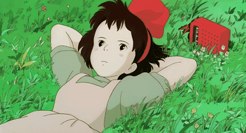
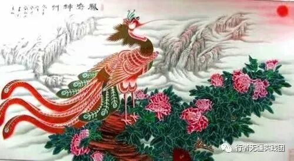
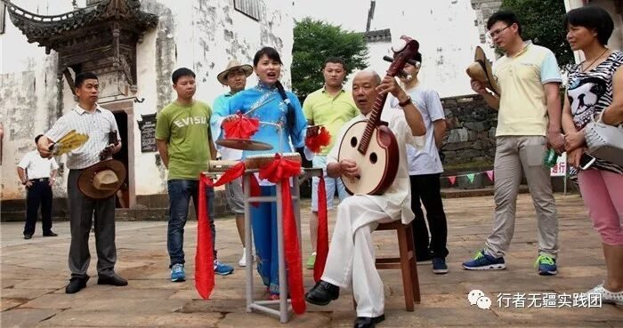
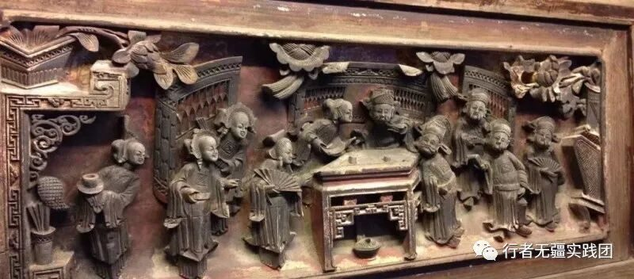
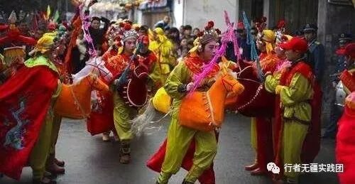
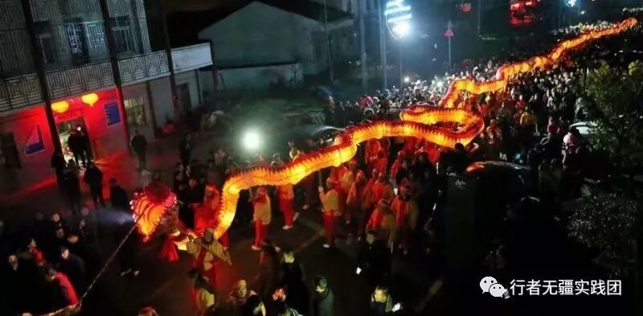

【行者无疆·拾遗皖徽】徽州精品文化科普（一）
精品文化科普

duang duang duang~炎热的夏天来喽，行者的脚步近了，快来喝着冰阔落和行者酱一起了解徽州非遗文化科普吧！
凤画又称龙凤画，是安徽凤阳的传统工艺美术品。源于明初，距今已有六百多年历史。
凤阳凤画经历代艺人不断创造，逐渐形成一套独特的传统艺术风格和陈式，其凤凰造型必须是“蛇头、龟背、鹰嘴、鹤腿、如意冠、九尾十八翅”等，聚集了百鸟之长。

亳州二夹弦是由最初的“纺棉小调”吸收“花鼓丁香”、“大五音”和“四根弦”等艺术元素，经过民间艺人的持续努力，逐渐形成的一种传统戏曲剧种。
清末以来，二夹弦戏班就经常活跃在皖北大地上。1958年底县委根据当地群众的建议，成立了亳县二夹弦剧团。《桑园会》、《张文生赶考》、《花厅会》三个二夹弦传统小戏应运而生，立上舞台。
徽州民歌“滚声——哈哈腔”古时徽州方言音韵称“花花腔”，也称“笑笑腔”，在古代官话中称之为“哈哈腔”。
它盛传在元、明朝。然而明朝戏曲在各地兴起，明朝中期徽州民歌哈哈腔被吸进徽戏、青阳腔等地方戏曲中。明朝徽商盛行全国，哈哈腔随徽商的足迹踏遍祖国大江南北，徽商歌迷、戏迷们把徽州的民歌、徽戏唱到四面八方，被融入渗透在其它戏剧的唱腔中，成为南北方多种戏曲演唱、表演的特色招数。

徽州木雕是传统民间雕刻艺术之一，与具有徽派风格的石雕、砖雕三种民间雕刻工艺木并称徽州三雕。徽州山区盛产木材、建筑物绝大多数都是砖木石结构，尤以使用木料为多，所以，就有了木雕艺人发挥聪明才智的用武之地，可根据建筑物体的部件采用圆雕、浮雕、透雕等表现手法。
木雕在徽派古建筑上，通常用于架梁、梁托、檐条、楼层拦板、华板、窗后、栏杆等处、雕花撰朵，富丽繁华。

竹马灯是一种传统舞蹈形式。竹马一般用篾片扎成骨架﹐外面糊纸或布﹐分前后两截﹐系在舞者腰上如骑马状。
舞时表现骑马徐行或疾驰﹑跳跃﹐动作轻松活泼﹐情绪热烈奔放。

跳五猖古朴，凝重，蕴含深厚的古代文化内涵，以阴阳五行学说为其架构，全套仪式演跳近2个小时。
有送神（取出面具）、接神、贺神、暖神、摆坛、祈愿等有关活动。跳五猖的音乐有大、小锣鼓之分，按演跳不同进程交替演奏。
洋蛇身用竹篾扎成鳞状，外蒙白布，内放蜡烛。洋蛇随音乐舞动，头出，音乐鼓点平缓。尾出，音乐鼓点轻快，流畅。头尾双出，音乐节奏急促铿锵亢奋，给人以超乎寻常、振奋人心之感。加之洋蛇腹内烛光闪烁，上下翻飞，果真金蛇狂舞。

徽菜起源于徽州府城歙县（古徽州），徽菜发端于唐宋，兴盛于明清。绿树丛荫、沟壑纵横、气候宜人的徽州自然环境，为徽菜提供了取之不尽，用之不竭的徽菜原料。
徽菜擅长烧、炖、蒸，而爆、炒菜少，重油、重色，重火功。 徽菜继承了祖国医食同源的传统，讲究食补，这是徽菜的一大特色。
当各式五彩河灯放入水面后随着水流缓缓游动，如果河灯经过大桥时全部顺利地从桥洞里穿过，即预示来年风调雨顺，四季平安。
此项民俗活动主要用于对逝去亲人的悼念，对美好生活的憧憬，因其独特的历史文化底蕴和丰富多彩的民俗表演，深受广大群众的喜爱。
以安徽省潜山县为发祥地，是当地独特的传统戏曲剧种,在明朝就已流传于民间，周围辐射至安庆六邑。在其众多戏班中，“三庆班”、”四喜班”、“和春班”和"春台班"在一起并称”四大徽班"，长年出演。因为安徽傍依长江，潜山弹腔借由水路传播，上达四川重庆，下到南京苏浙，经年累月，与当地的戏曲文化相互融合。
图片丨行者无疆实践团
文字丨李心悦 徐信步 杨宇晴
责编丨邓子孚 应雨珊
审核丨潘雯雯
行者无疆实践团
QQ：2758025831
随行者一起认识世界
长按二维码关注